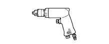
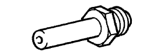
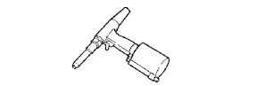

НАРУЖНАЯ НАКЛАДКА ДВЕРИ БАГАЖНОГО ОТДЕЛЕНИЯ (для моделей без кронштейна запасного колеса) > РАЗБОРКА > Подготовка

| Фирменный герметик 1324 от компании Тойота, Three Bond 1324 или аналогичный | - |
| Герметик | 3M DP-105 или аналогичный |
| Фреза или аналогичный инструмент | - |
| Дрель | - |
| Двусторонняя клейкая лента | - |
| Нагревательная лампа | - |
| Ручной клепальный пресс | - |
| Струнная проволока | - |
| Заклепка | - |
| Резиновый скребок | - |
| Лента | Для предотвращения повреждения поверхности |
| Динамометрический ключ | - |
| Пылесос | - |
| Деревянный брусок или аналогичный предмет | Для закрепления обоих концов струнной проволоки |
| Сверло 4 мм (0,157 дюйма) | - |
 | 09010-3C120 | Набор торцевых головок "TORX" | - |
|  | 09050-00032 | Пневматическое сверло | - |
|  | 09050-02050 | Наконечник № 4 | - |
|  | 09050-20010 | Пневматический клепальный молоток | - |
 | 09061-1C110 | Инструмент для снятия фиксаторов 10 мм | - |
 | 09061-1C300 | Комплект съемников молдингов | - |
 | (09013-1C120) | Торцевой ключ с головкой "TORX" T30 T-типа | - |
 | (09061-1C340) | Съемник молдингов D | - |